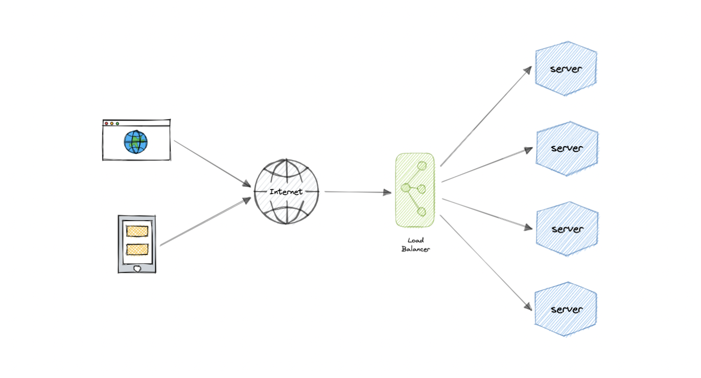
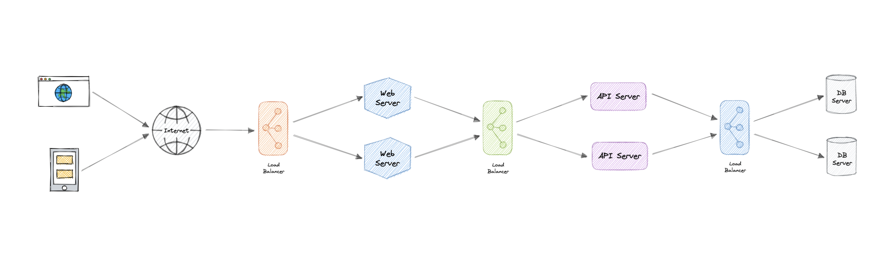
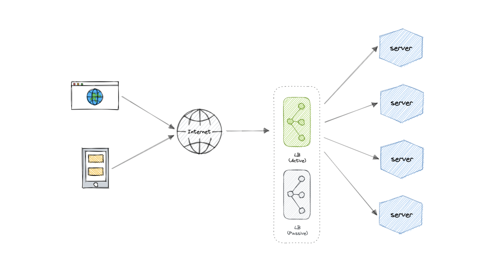
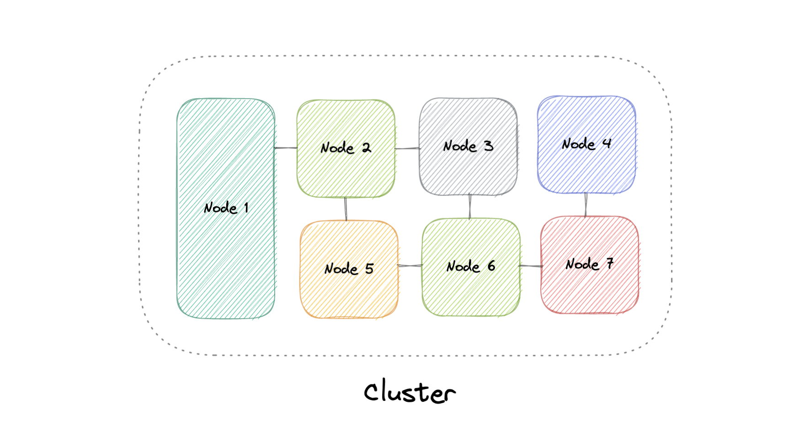
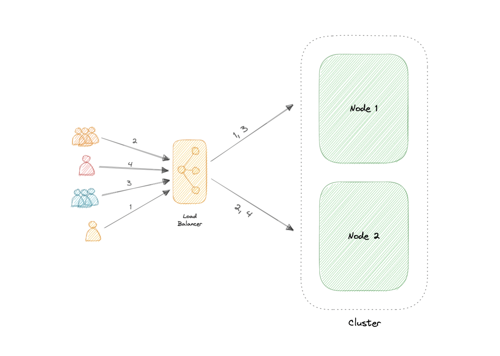
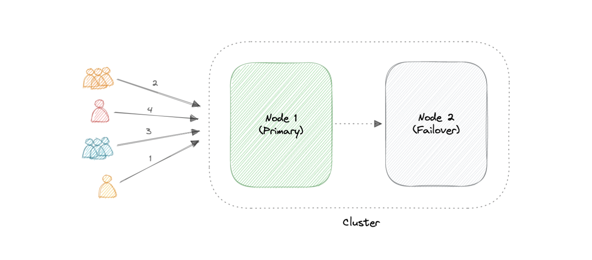

Load Balancing & Clustering
Cách phân phối tải qua nhiều máy chủ để đạt tính sẵn sàng cao và mở rộng được, và cách nhóm các máy thành một cụm (cluster) hoạt động như một thể thống nhất.
Load Balancing
Load balancer phân phối lưu lượng đến nhiều tài nguyên (server), chỉ gửi request tới những server đang "khỏe". Nếu một server chết, traffic được chuyển sang server khác; thêm server mới thì LB tự động bắt đầu gửi request tới.

Phân phối tải theo cách nào
- Host-based: theo hostname được yêu cầu.
- Path-based: theo toàn bộ URL.
- Content-based: kiểm tra nội dung request (vd giá trị tham số).
Theo tầng (layer)
| Tầng | Đặc điểm |
|---|---|
| Layer 4 (Network) | Định tuyến theo IP; không làm content-based; thường là phần cứng tốc độ cao. |
| Layer 7 (Application) | Đọc trọn request; định tuyến theo nội dung; "hiểu" traffic đầy đủ. |

Thuật toán định tuyến
| Thuật toán | Cách hoạt động |
|---|---|
| Round-robin | Phân request lần lượt theo vòng. |
| Weighted Round-robin | Round-robin có trọng số theo năng lực server. |
| Least Connections | Gửi tới server có ít kết nối nhất. |
| Least Response Time | Kết hợp thời gian phản hồi nhanh nhất + ít kết nối nhất. |
| Least Bandwidth | Gửi tới server có lưu lượng (Mbps) thấp nhất. |
| Hashing | Phân theo một khóa (IP client, URL...). |
Tính năng & lưu ý
Tính năng thường gặp: autoscaling, sticky sessions (gắn user với một server để giữ session), healthchecks, persistent connection (WebSocket), SSL/TLS, caching, logging, request tracing, redirects, rate limiting.
Bản thân load balancer có thể là single point of failure. Khắc phục: chạy nhiều LB ở chế độ cluster (active + passive). Khi LB active chết, LB passive tiếp quản → hệ thống chịu lỗi tốt hơn.

Ưu điểm: Scalability, Redundancy, Flexibility, Efficiency. Ví dụ: AWS ELB, Nginx, HAProxy, GCP/Azure Load Balancing.
Clustering
Một cluster là nhóm ≥2 máy tính (node) chạy song song để đạt mục tiêu chung — tận dụng tổng bộ nhớ và sức xử lý để tăng hiệu năng tổng thể. Thường có một leader node làm điểm vào, phân chia công việc và tổng hợp kết quả. Lý tưởng là người dùng không nhận ra đó là cluster hay một máy đơn.

Cấu hình High-Availability
| Cấu hình | Mô tả |
|---|---|
| Active-Active | ≥2 node cùng chạy dịch vụ đồng thời; mục đích chính là load balancing → tăng throughput & thời gian phản hồi. |
| Active-Passive | ≥2 node nhưng không phải tất cả đều active; node passive ở chế độ chờ (standby). |


Load Balancing vs Clustering ⭐
| Clustering | Load Balancing |
|---|---|
| Cung cấp redundancy, tăng capacity & availability. | Phân phối request qua các server. |
| Các server biết về nhau và phối hợp vì mục tiêu chung. | Các server không biết về nhau; chỉ phản hồi request từ LB. |
Hai khái niệm này không loại trừ nhau — thường được dùng cùng nhau. Ví dụ cluster: Kubernetes/Amazon ECS (containers), Cassandra/MongoDB (databases), Redis (cache).
Thách thức của clustering: tăng độ phức tạp cài đặt/bảo trì (mỗi node phải cập nhật OS + app + dependency), khó hơn nếu node không đồng nhất, phải giám sát tài nguyên & gom log, quản lý storage chia sẻ phức tạp.
Load balancer phân phối traffic (L4 theo IP, L7 theo nội dung) bằng round-robin, least connections... — nhớ chạy LB dự phòng để tránh SPOF. Cluster gồm các node biết nhau, phối hợp (active-active để cân tải, active-passive để dự phòng). LB ≠ cluster nhưng thường đi đôi.